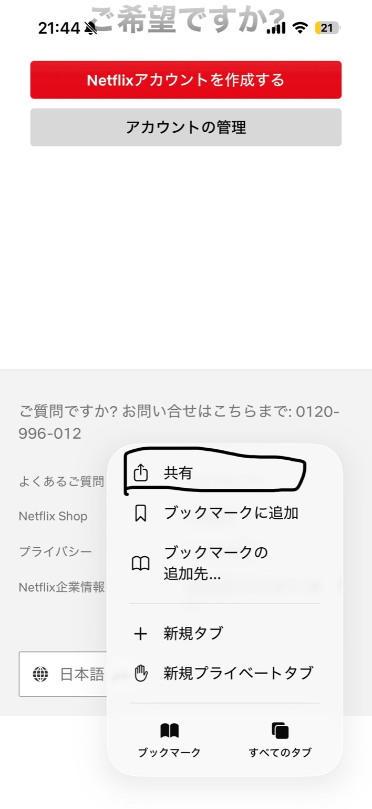
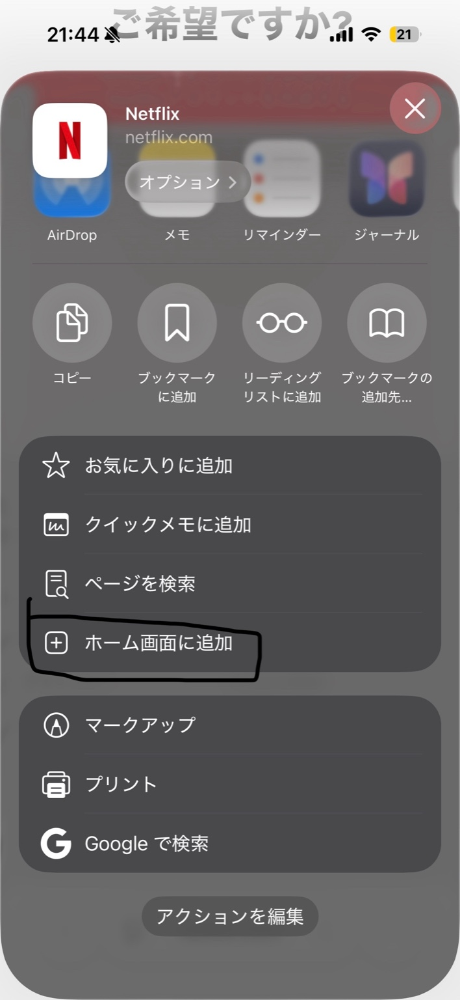

iPhoneで追加する手順
- Safariで、ホーム画面に置きたいサイトを開きます。
- 画面下の共有ボタン（四角に上矢印）をタップ。
- 共有メニューを下にスクロールして、「ホーム画面に追加」をタップ。
- 名前を必要なら編集して、右上の「追加」をタップ。

① まずはSafariの「共有」をタップ（四角に上矢印）。

② 共有メニューの中から「ホーム画面に追加」を選ぶ。
追加後は、アプリアイコンみたいにホーム画面から開けます。通知やログイン状態はサイト次第です。
iPadで追加する手順
- Safariでサイトを開きます。
- 画面上（右上など）にある共有ボタンをタップ。
- メニュー内の「ホーム画面に追加」をタップ。
- 名前を確認して「追加」。
※iPadは画面レイアウトが違うだけで、やることは同じです。
「ホーム画面に追加」が出ないとき
- Safariで開いているか確認（Chromeやアプリ内ブラウザだと出ない/違う場合あり）。
- 共有メニューの中を一番下までスクロール（項目が隠れていることがあります）。
- 共有メニューの「アクションを編集」から「ホーム画面に追加」を有効化できる場合があります。
- スクリーンタイムの制限があると表示されないことがあります（コンテンツとプライバシー制限など）。
- それでも無理なら、iOS/iPadOSの再起動・アップデートで直ることがあります。
コツ まずここだけ確認
① Safariで開く
アプリ内ブラウザ（SNS/LINE内）だと項目が出ないことが多い。
② 共有メニューを下まで
「ホーム画面に追加」はスクロールしないと見えないことがある。
③ アクション編集
非表示になっていたら有効化できる場合あり。
アイコンをきれいにする（運営者向け）
自分のサイトをホーム画面に追加したとき、アイコンをちゃんと表示させたいなら、ページにapple-touch-iconを用意します。
headに追加する例
<link rel="apple-touch-icon" href="/icons/apple-touch-icon.png">
<!-- できれば 180x180 以上推奨（iPhoneで使われやすい） -->
※画像が無い場合は、スクリーンショットっぽいアイコンになりがちです。